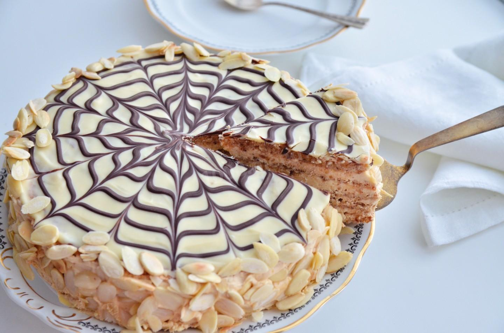

"Естерхазі" – неймовірно смачний і красивий торт. Своєю назвою цей десерт завдячує старовинному угорському княжому роду Естерхазі. Він є гордістю угорської та австрійської кухні.
Повітряні білково-горіхові коржі в поєднанні з ніжним масляно-заварним кремом – це надзвичайно смачно. А знаменита павутинка з мастики зробила торт "Естерхазі" впізнаваним у всьому світі.
Від самого початку він готувався з мигдалю (мигдального борошна), але останні років його почали робити, зокрема, і з волоських горіхів. Спекти вишуканий торт "Естерхазі" можна як до святкового столу, так і до дружнього вечірнього чаювання.
Для коржів
Для крему
Для глазурі
Приготування коржів. Збити сіль, цукор та білки до щільної піни – меренги. Всипати мигдальне борошно. Перемішати силіконовою лопаткою. Відправити масу в кондитерський мішок і відкинути на пергамент 4 коржі діаметром 17-18 см. Відправити випікатися при температурі 160˚C приблизно на 20 хвилин. Дістати з духовки й одразу зняти з пергаменту.
Приготування крему. Жовтки, кукурудзяний крохмаль, цукор, ванільний екстракт і сіль збити. Налити цю масу на гаряче молоко в сотейнику, покласти на плиту й уварювати до загустіння, постійно помішуючи. Щойно з’являться перші бульбашки – крем готовий. Зняти його з плити, накрити плівкою "в контакт" і залишити охолоджуватися. Збити варене згущене молоко з вершковим маслом кімнатної температури, ввести охолоджений крем і збити все до однорідності.
Збирання торта. Кожен корж обмазати кремом, а останній шар абрикосовим джемом або просто абрикосовим пюре. Відправити охолоджувати на кілька годин. Розтопити шоколад та вершки, перемішати і залити торт зверху. Темним шоколадом нанести кола по спіралі, починаючи з центру. Перпендикулярно провести зубочисткою по шоколадних смужках. Боки торта прикрасити мигдальними пелюстками.